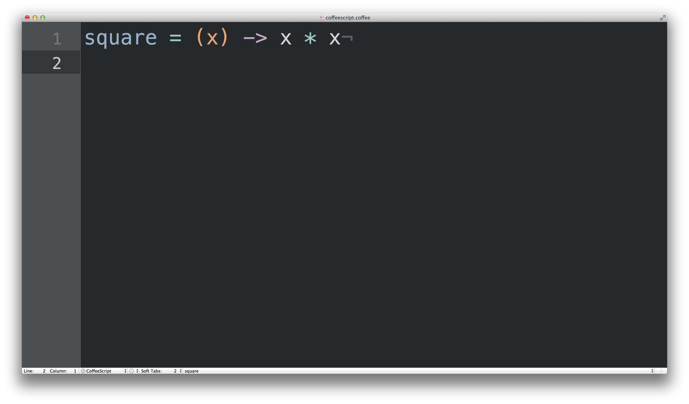

CoffeeScript: An Introduction
My Name Is Tristan O'Neil
I Work At Gristmill
Ruby
On Rails
August 31st 2009
Rails 3.1 Shipped
Asset Pipeline
CoffeeScript By Default
Controversy Ensues
Regardless I'm Compelled to Learn It
I Fell In ♥
What Is It?
It's A Programming Language
That Compiles Down TO JavaSript
That Attempts To Fix All The Wrongs Of JavaScript
Going Back
Brendan Eich Creator of JS
JS Had To 'Look Like Java' Only Less So, Be Java’s Dumb Kid Brother or Boy-hostage Sidekick. Plus, It Had To Be Done In Ten Days Or Something Worse Than JS Would Have Happened.
Enough Hate
Why Should You Use CoffeeScript?
Easier To Read
Easier To Write
Easier
To Maintain
It's Beautiful
Python|Ruby Hybrid
Less Of
; {} ()
Less Cruft More Code
Speaking Of Code...
Functions

Objects and Arrays
Loops
Statements
Classes
Function Binding
Lots Of Other Features
Resources
coffeescript.org
js2coffee.org
coffeescript.codeschool.com
The Little Book on CoffeeScript
Programming in CoffeeScript